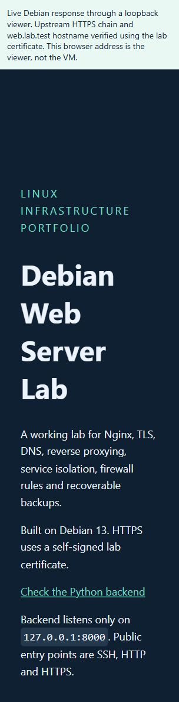
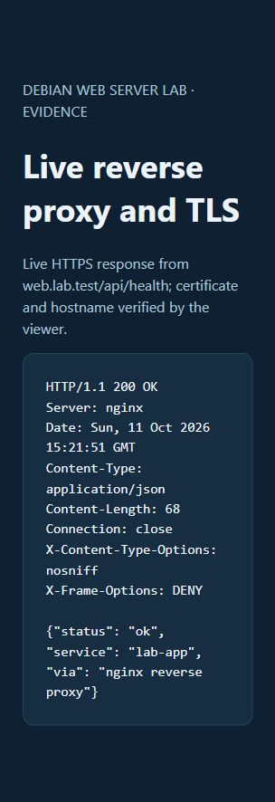
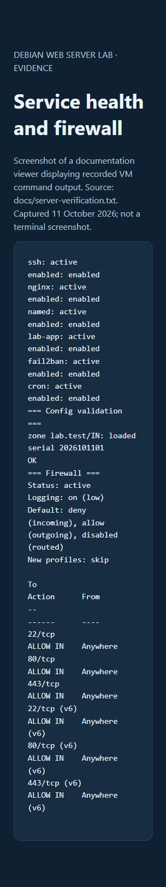
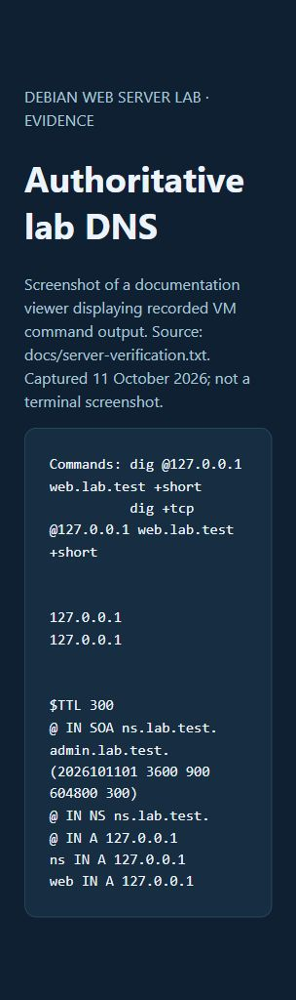
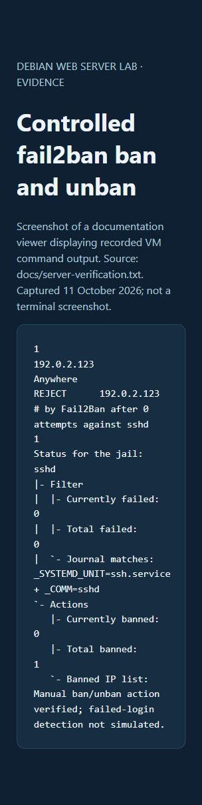
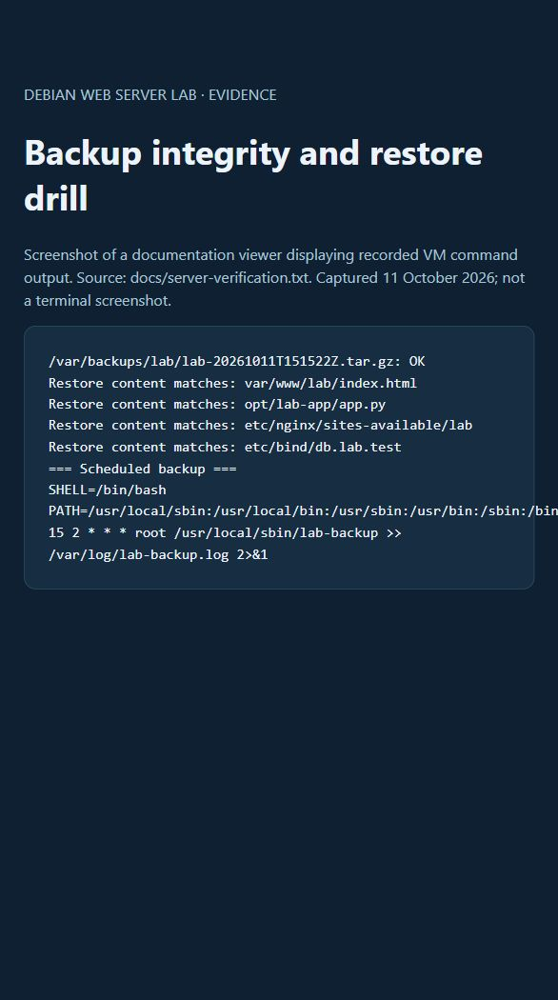

Deployed and tested · 11 October 2026
Debian Web Server Lab
My VMware lab: Nginx, local HTTPS, a Python reverse proxy, loopback DNS, firewall, fail2ban and backups.
This is a saved project report. Two screenshots show live responses at capture time; four show recorded results in a browser documentation viewer, not native terminal captures.
Checks that passed
- Six services active and enabled
- Inbound TCP 22, 80 and 443 reachable; backend and DNS remain local
- HTTPS certificate and hostname validation passed; API returned HTTP 200
- DNS UDP/TCP checks and manual fail2ban ban/unban passed
- Backup checksum and selected-file restore comparisons passed
Still to check: a normal overnight backup and service startup after a reboot. A separate portfolio website is not hosted yet.
Screenshot evidence
Live Nginx page
Live VM response through a viewer that verifies upstream HTTPS.

Live reverse proxy response
Live JSON health response; certificate and hostname verified by the viewer.

Services and firewall
Recorded command output displayed in a browser evidence viewer.

Local DNS
Recorded UDP/TCP query results; BIND9 listens only on loopback.

fail2ban controlled test
Manual ban/unban action; automatic failed-login detection was not simulated.

Backup restore drill
Checksum and selected-file comparisons passed; overnight cron execution remains unobserved.

Documentation and configuration
README · Operations guide · Server test output · Windows test output
Read the complete README here
# My Debian web server lab
I built this Debian 13 web server in VMware to demonstrate Linux service administration, reverse proxy configuration, access controls and backup verification. Nginx serves a static page over HTTPS and routes API requests to a Python backend.
This repository contains the configs, setup scripts, test output and screenshots. The server itself runs in my local VM.
## What I built
- Nginx serves an HTML page and redirects HTTP to HTTPS.
- `/api/health` goes through Nginx to a Python app on `127.0.0.1:8000`.
- The app runs as its own user through systemd.
- UFW allows incoming TCP traffic on 22, 80 and 443.
- BIND9 serves a local `lab.test` zone, only inside the VM.
- SSH uses a separate login key, with root login disabled.
- fail2ban is configured for SSH.
- A backup script saves the configs, app and page, with a checksum. Cron runs it daily at 02:15 in the VM's timezone.
```mermaid
flowchart LR
Windows[Windows PC] -->|SSH| Debian[Debian VM]
Windows -->|HTTP / HTTPS| Nginx
Nginx --> Page[HTML page]
Nginx -->|127.0.0.1:8000| Python[Python app]
Debian --> DNS[BIND9: local lab.test zone]
Cron --> Backup[Backup archive + checksum]
```
## Configuration decisions
I used `lab.test` for the DNS zone to avoid conflicts with multicast DNS on `.local`. DNS and the backend listen on loopback, so the firewall only needs to expose SSH, HTTP and HTTPS.
HTTPS uses a self-signed lab certificate. The tests validate the certificate and the hostname `web.lab.test`, rather than bypassing certificate checks.
## Checks that passed
The services were running and enabled, and the Nginx, SSH and BIND config checks passed. From Windows, ports 22, 80 and 443 were reachable; DNS and the Python port were not.
The HTTPS page loaded, and `/api/health` returned HTTP 200 with `status: ok`. DNS queries worked over UDP and TCP inside Debian.
The backup checksum passed. Extracting the archive into a temporary directory and comparing selected files also passed. A temporary cron job confirmed that cron could run the backup script.
For fail2ban, the test was a manual ban and unban of `192.0.2.123`, a documentation address. I haven't tested detection with repeated failed logins yet.
[Server checks](docs/server-verification.txt) · [Checks from Windows](docs/host-verification.txt) · [Screenshots](docs/SCREENSHOTS.md)
## Files
| Folder | Contents |
| --- | --- |
| `configs/` | Copies of the server configuration |
| `app/` | The Python health API |
| `site/` | The HTML page |
| `scripts/` | Setup, verification and backup scripts |
| `docs/` | Command output, screenshots and my maintenance notes |
[Maintenance commands](docs/OPERATIONS.md)
`scripts/provision.sh` is for a fresh, dedicated lab VM. It replaces some default configs, so I wouldn't run it on an existing server without reviewing it first.
## What I still want to improve
I still need to check the services after a reboot and observe a normal overnight backup. The backup script also needs a retention policy and a copy stored outside the VM.
The Python app is a small learning example, and HTTPS uses a local certificate. A public deployment would need different hosting and a real domain certificate. I haven't hosted a separate portfolio website yet.
There are six screenshots. Two show live server responses; four show saved command output in a browser viewer. Full test output is included in `docs/`.
Passwords, private keys and backup archives stay outside this repository. The account password has been changed, and the old SSH login key has been replaced. Password login over SSH is still enabled.
## Docs I used
- [Nginx beginner guide](https://nginx.org/en/docs/beginners_guide.html)
- [Nginx HTTPS configuration](https://nginx.org/en/docs/http/configuring_https_servers.html)
- [Debian handbook: monitoring and fail2ban](https://www.debian.org/doc/manuals/debian-handbook/sect.supervision.en.html)
- [Reserved testing domains](https://www.rfc-editor.org/rfc/rfc2606)